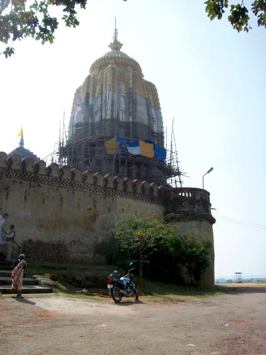
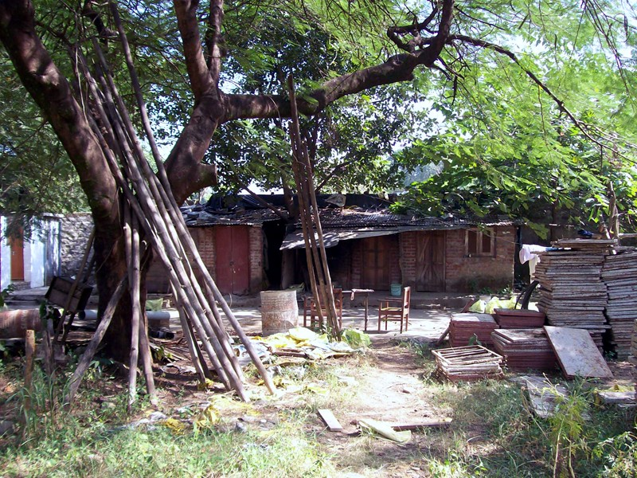
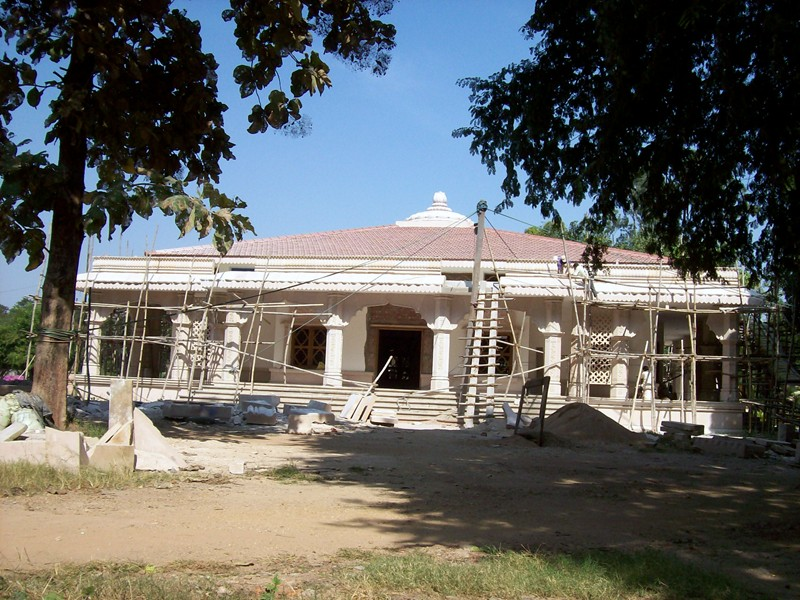
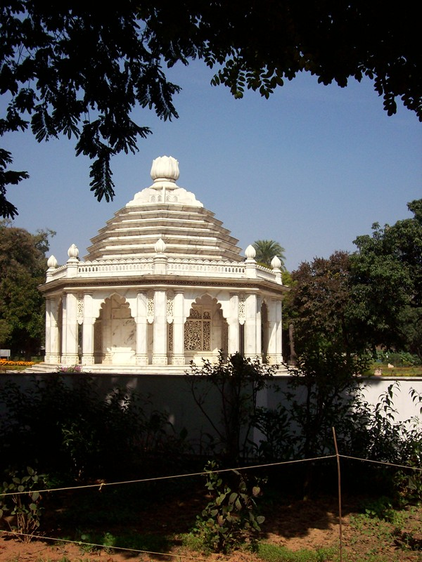
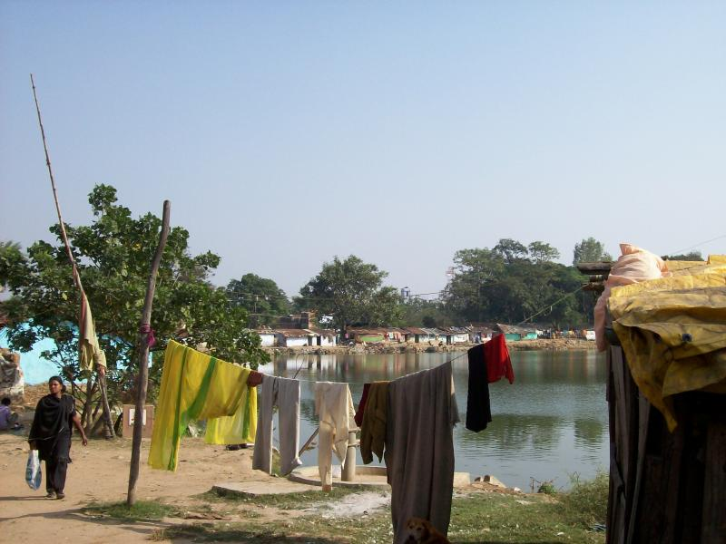
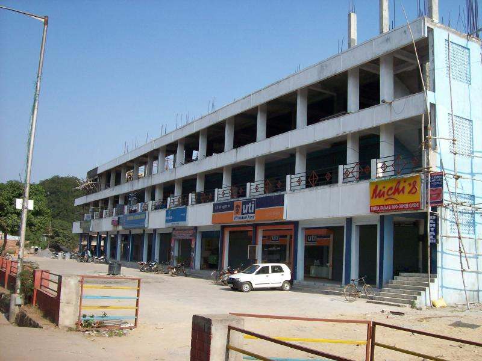
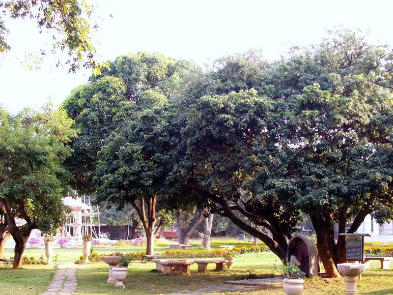

Ranchi

Jaganatha temple on a hill just north of town. Contains a statue of the Lord of the World that's primitive and cartoonish--looks like it was drawn by a kindergartner. Considering the elaborate statues you usually find in Kali temples, there must be a story here. There was a crowd of well-dressed but dull-eyed kids begging outside the temple. Ram explained that no doubt both parents worked and couldn't make ends meet, so the kids were hungry, and delivered a spiel on overpopulation. He gave them one rupee each. "You must give them the same amount," he explained. "Or there will be quarrels."
The main SRF/YSS ashram in India is located in Ranchi. There'll be lots more on Ranchi when I get the SRF-specific pages up. Accomodations are, again, Spartan. Note sheet-on-plywood beds and mosquito netting.

The older buildings are falling apart; some have been torn down. There's a lot of construction going on.

New meditation hall under construction (think it recently opened). Note ladders and scaffolding held together with rope.

Mandir dedicated to Paramahansa Yogananda.

The ashram used to be on 25 acres; now it's on 23. The townspeople would fish in the pond, which is on ashram property, and by the way, swipe something from the ashram. Eventually the monks built a wall around the compound, and to be nice, left the pond outside. A shanty town promptly sprang up around the pond.

More seriously, this strip mall is also on ashram property. Collecting rent would mean outbribing the developer in India's weak legal system, and monks are notoriously poor at...well just notoriously poor. If India ever gets a legal system that's closer to the US model than the Mexican, the ashram will have made a lucrative involuntary investment.

My Guru lived at Ranchi for three years, and would sit and teach under this lychee tree. The tree now has more leaves per branch than other lychees, yields more fruit per branch, and begins bearing after the other trees have stopped. It's known horticulturally as lychee var. Ranchi. Things around my Guru have a propensity for evolving.